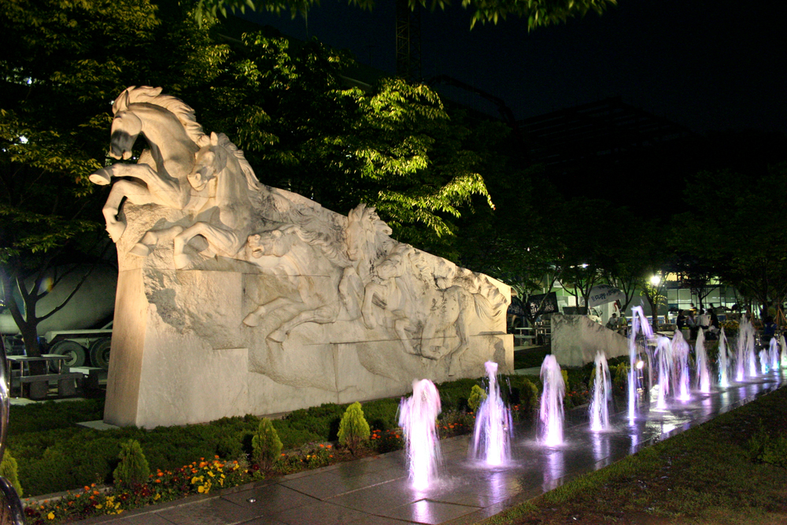
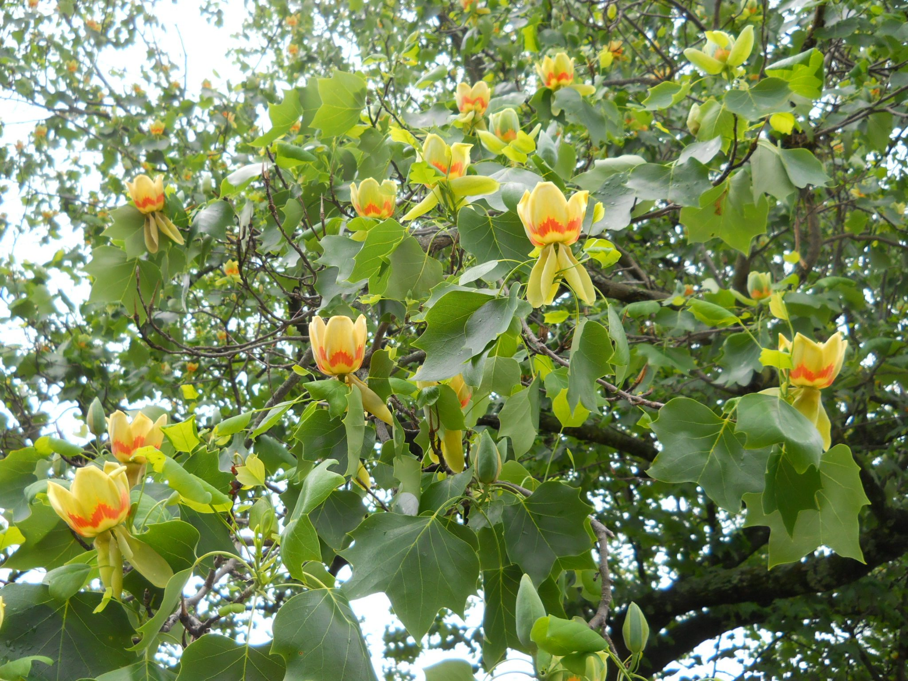

Soongsil University
Soongsil University is the first modern university in Korea. It was founded under the Christian missionary William M. Baird on October 10, 1897, in Pyongyang. In 1954, it has moved to South Korea, and the campus is located in 369 Sangdo-ro, Dongjak-gu, Seoul.
SSU, the abbreviation of Soongsil University, is a combination of the Daedong River and Han River through two S-lines, symbolizing Korea's first university that started in Pyongyang.
The mascot of Soongsil University is white horse and Liriodendron tulipifera.
 Liriodendron tulipifera is a huge tree that does not eat insects and is always clean, symbolizing the idea of a straight education that Soongsil University has shown over a hundred years of history. Moreover, it is a tree that grows a lot on our campus but is difficult to find in other universities.
Website